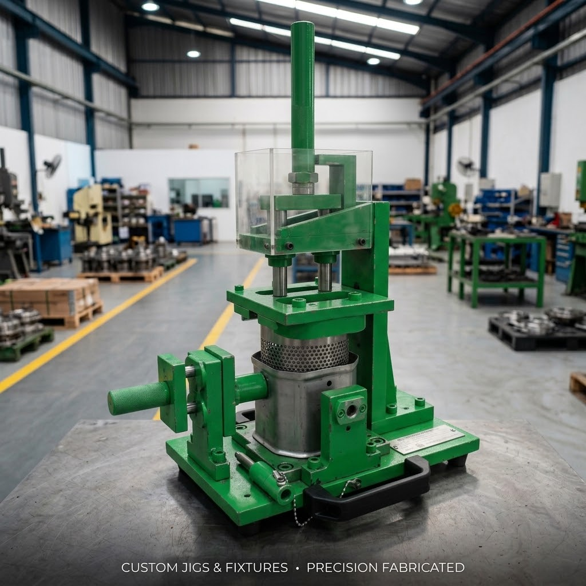
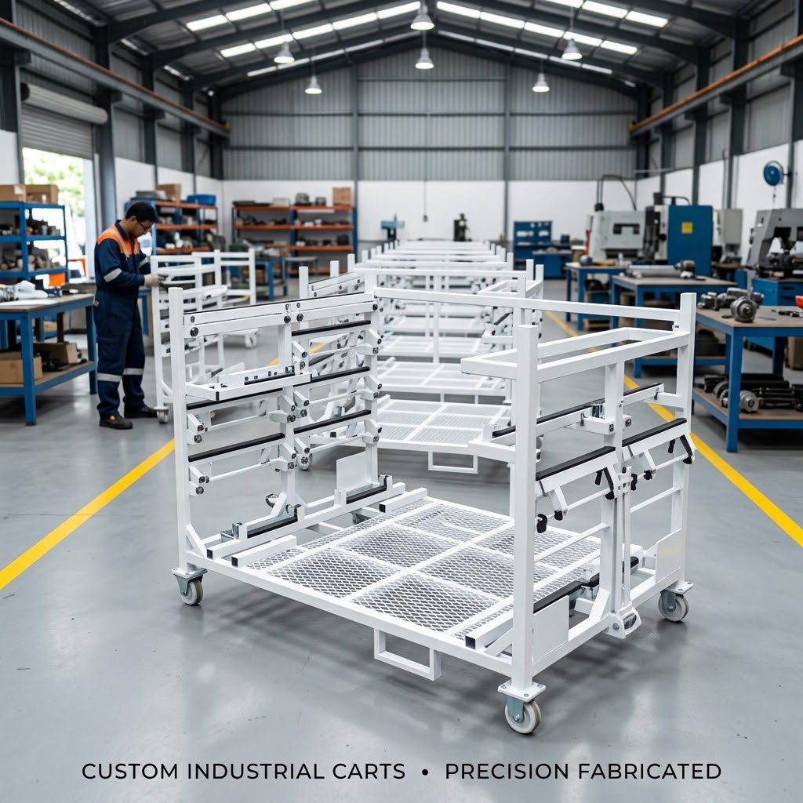

Portofolio & Rekam Jejak Manufaktur
Setiap item memiliki dokumentasi teknis, toleransi geometris GD&T terverifikasi, alokasi mesin CNC, serta lembar kendali mutu inspeksi fisik.

Jasa Machining Presisi Komponen Spherical & Kontur Radial
Pemesinan presisi komponen berbentuk bulat, kontur cembung-cekung radial, dan dudukan engsel presisi tinggi dengan toleransi mikron.

Jasa Machining Presisi Pelat Cetakan, Die Base & Stripper Plate
Pemesinan pelat tebal cetakan baja perkakas dengan kerataan bidang paralel (flatness) superior dan lubang dowel pin berpresisi H7.

Pemesinan Presisi Billet Logam Solid & Kontur 3D Kompleks
Pemesinan blok logam solid (billet) menjadi part berstruktur tipis dan berkontur 3 dimensi rumit tanpa deformasi tegangan sisa.

Rancang Bangun Stamping Dies Heavy Duty & Sheet Metal Tooling
Pembuatan cetakan press stamping logam untuk proses blanking, piercing, bending, dan deep drawing lembaran pelat otomotif.

Pembuatan Mold Dies Presisi Cavity & Core Cetakan Plastik/Karet
Pemesinan blok cavity dan core cetakan injeksi dengan kehalusan permukaan cermin (mirror finish) dan ketepatan parting line mutlak.

Jig Inspection & Checking Fixture Unit A (Go/No-Go Gauge)
Perangkat alat bantu uji dimensi cepat (checking fixture) untuk verifikasi kualitas part manufaktur secara akurat pada lini produksi massal.

Jig Inspection & Checking Fixture Unit B (Multi-Indicator)
Fixture pengecekan part berdimensi sedang dengan dudukan multi dial indicator untuk pembacaan penyimpangan runout dan kerataan.

Fabrikasi Meja Kerja Assembly & Rak Susun Material Ergonomis
Perakitan meja kerja lini perakitan dan rak susun multi-tingkat berdesain ergonomis, kokoh, dan tahan terhadap benturan alat kerja.

Fabrikasi Rangka Dudukan Mesin & Rak Industri Heavy Duty
Fabrikasi struktur rangka baja kokoh untuk dudukan mesin pabrik, struktur konveyor, dan sistem rak penyimpanan beban tonase berat.

Fabrikasi Trolley Material Handling & Towing Carrier Industri
Rancang bangun trolley dorong dan towing carrier untuk memindahkan komponen antar stasiun kerja dengan roda heavy-duty bersuara senyap.
Memiliki Gambar Kerja CAD 2D/3D Spesifik?
Kirimkan file STEP, IGES, DXF, atau PDF drawing Anda. Tim engineering PT. Nurcahya Teknik Industry siap melakukan analisis gambar kerja dan menerbitkan penawaran harga resmi (RFQ) dalam 1×24 jam kerja.